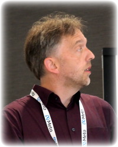

Better regression handling for the kernel
Leemhuis started by saying that, after a break of a few years, he has managed to obtain funding to work as the kernel's regression tracker and is back at the job. He has created a new bot intended to minimize the amount of work required and to, he hopes, enable effective regression tracking while not creating additional overhead for developers. In an ideal world, bug reporters will put bot-related directives into their reports, after which the bot will track replies. When it sees a patch with a Link tag pointing back to the report, it will mark the bug as resolved.
This application (called "regzbot") is still young, he
said, and it has its
share of warts and deficiencies. It has reached a point of being useful
for Linus Torvalds, but it is not yet as useful for subsystem maintainers.
It is, in any case, far better than trying to track bugs manually. Regzbot has
already caught regressions that would have otherwise fallen through the
cracks. He thanked Meta for providing the funding that makes this work
possible.

Jakub Kicinski observed that a lot of reported bugs are not caused by kernel changes; instead, they result from problems introduced by firmware updates and such. He wondered how many bugs are reported that kernel developers cannot fix at all.
Torvalds jumped in to say that he sees a lot of regressions that persist after the -rc1 release, even when they have been duly reported. Sometimes they are not fixed until around -rc5 or -rc6, which he finds annoying. Much of the delay comes down to waiting for somebody to come up with a suitable fix for the bug but, he said, it would be better to just become more aggressive about reverting buggy patches. James Bottomley said that a bug that is fixed allows a feature to show up in the final kernel release; a feature that is reverted, instead, cannot be reintroduced until the next merge window. That provides a strong incentive for developers to hold out for a fix rather than reverting.
Bottomley also brought up the subject of bug fixes that cause regressions; reverting the fix will restore the previous bug. Torvalds said that such "fixes" should be reverted immediately, but Bottomley argued, to general disagreement, that developers should weigh the severity of both the old and new bugs and use that to decide whether to revert the buggy fix or not.
Leemhuis said that a good approach to a reported regression could be to post a reversion to the list immediately. If nothing else, a patch like that will force a discussion of the problem; it can be applied "after a few days" if no progress is made.
Integration testing
Torvalds said that he wished more people would test linux-next so that fewer bugs would get into the mainline in the first place, but Mark Brown answered that linux-next is a difficult testing target; it's hard to turn around a comprehensive set of tests in the 24 hours that a linux-next release exists. Bottomley suggested creating an alternative tree for regression testing. Linux-next, he said, was created for integration testing; it is there to find merge conflicts and compilation problems and it does that task well. It was never designed for regression testing, though.
Some developers remarked that linux-next is also hard to test against because it is "always broken"; Ted Ts'o asked why that is the case. Brown said that linux-next kernels usually boot successfully, but often have problems that will not show in build-and-boot testing. He said that KernelCI does some linux-next testing, but Torvalds pointed out that this testing doesn't really cover drivers. It would be nice, he said, to have more of the sorts of testing that individual subsystem maintainers do on their own trees done on an integrated tree as well.
Brown said that the people running automated testing systems do not know, as a general rule, about the testing the subsystem maintainers do. If that information were more widely available, those testers could expand their coverage. Matthew Wilcox was unconvinced, though; he said that the regressions being talked about are not really integration bugs. Instead, they are just bugs that other users happen to catch. Torvalds complained that, with his three machines, he hits some sort of problem on almost every release; that suggests to him that test coverage is lacking.
Leemhuis returned to the issue of regressions taking too long to fix. Maintainers, he said, often hold their fixes for the following merge window; that causes bugs to remain in the released kernel and leads to massive post-merge-window stable-kernel updates. Stable-kernel maintainer Greg Kroah-Hartman said that there are a lot of subsystem maintainers who send a pull request during the merge window, then go quiet until the next development cycle. That, he said, is not the right way to manage patches.
There was a bit of a digression into the problem of automatically selected patches causing regressions in the stable kernels. Maintainers who are worried about this, Paolo Bonzini said, should just disable automatic selection entirely for their subsystem and look at manually selected patches instead. It was also pointed out that developers can put a comment like "# wait two weeks" in their Cc: stable lines to give riskier patches a chance to soak before they are shipped in a stable release; few maintainers, it seems, were aware that they could do that.
Leemhuis said another problem is that maintainers can disappear at times, or fixes can just go into their spam folders. He also said that regressions from the previous development cycle are often treated with less urgency. Maintainers can also simply fail to notice that a patch fixes a regression, he said; he wondered whether some sort of special tag would help there. The group showed little appetite for yet another tag, suggesting that better changelogs should be written instead.
Bugzilla blues
Then, Leemhuis said, there is the perennial issue of the kernel.org Bugzilla instance. Few developers pay any attention to it, with the result that high-quality bug reports filed there are just ignored. Rafael Wysocki, one of the handful of maintainers who use that instance, said that he gets maybe 10% of his bug reports by that path. Kroah-Hartman noted that the Bugzilla project is no longer active, so that code is essentially unmaintained. Torvalds added that no other projects use it, and suggested that it should perhaps be configured to just send reports out to the linux-kernel mailing list.
Ts'o said that he has automatic mailing working for a couple of subsystems. It's "handy", he said, since the lore.kernel.org archive is a better comment tracker than Bugzilla at this point. But Bugzilla is useful for low-priority fuzzing reports that he may not get to for months; it helps to ensure that they don't get lost. Wysocki said that Bugzilla is also useful for reporters who need to supply some sort of binary blob, such as a firmware image; email does not work well with those. There was a general consensus that the Bugzilla instance should be replaced, but not a lot of ideas on what that replacement should be. Leemhuis suggested putting a warning on the instance while a replacement is sought.
As the session finally reached its end, Leemhuis asked about the correct response to reports of bugs in patched kernels, such as those shipped by distributors. For now he uses his best judgment, which most attendees seemed to think was the right course. Christoph Hellwig said that, in general, bug reports are the responsibility of whoever patched the kernel. Exceptions can be made, though, for lightly patched kernels shipped by community distributors like Arch, Fedora, and openSUSE. Those patches are rarely the source of the problem, and the testing provided by those users is valuable.
The session concluded with Torvalds saying that he finds Leemhuis's
regression-tracking work to be useful. He looks at the reports before
making releases to get a picture of what the condition of the kernel is.
| Index entries for this article | |
|---|---|
| Kernel | Development model/Regressions |
| Kernel | Regression tracking |
| Conference | Kernel Maintainers Summit/2022 |
Posted Sep 20, 2022 10:13 UTC (Tue)
by roc (subscriber, #30627)
[Link]
One problem with this is that on average there is more uncertainty about the new code than the old code. Even if the new bug seems less severe than the old bug, the new code may have added unknown new bugs, while the reverse (the new code fixed additional unknown bugs) is unlikely.
Better regression handling for the kernel